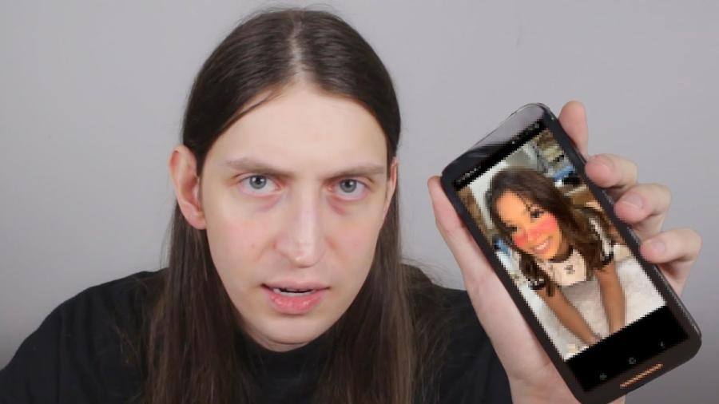

A adultização de crianças e adolescentes está sob holofotes em todo o país e reacendeu o debate no Legislativo nesta semana após o influenciador Felca fazer uma denúncia em um vídeo no Youtube, que já ultrapassou 35 milhões de visualizações.
A adultização é o processo de inserir a criança em um espaço que não é próprio da infância. Ana Claudia Favano, psicóloga, pedagoga e gestora da Escola Internacional de Alphaville, explica que isso se dá quando elas são expostas precocemente a comportamentos, conteúdos, responsabilidades e padrões estéticos típicos da vida adulta.
Termo usado por Felca foi eficaz para sintetizar tema e pautar debate, diz juiz. "Centenas de especialistas estão falando disso há anos. Ele conseguiu sintetizar tudo com essa palavra e juntar milhares de horas de trabalho de psicólogos, juízes, advogados e promotores em um vídeo de 50 minutos", avalia Iberê de Castro Dias, magistrado da Vara da Infância e Juventude de São Paulo.
O fenômeno antecipa etapas do desenvolvimento. "Isso acontece quando existe uma pressão para ter uma maturidade muito precoce. É como se a criança tivesse que agir, se vestir, pensar e discernir como um adulto, ou seja, antes da hora", fala Renata Greco, psicanalista e gerente de comunicação do Instituto Liberta, organização que trabalha com a prevenção da violência sexual contra crianças e adolescentes. Para a especialista, há um descompasso entre o que é exigido delas e o que elas são capazes de lidar emocional e cognitivamente.
As crianças estão dentro das redes sociais, elas estão inseridas e acabam imitando o que estão vendo, imitam as tendências, as danças, as maquiagens, os influenciadores, mesmo sem entender o que aquilo significa, elas só imitam. Tem um mundo por trás que tem estimulado essa adultização por meio da monetização.
Crianças adultizadas também ficam mais vulneráveis à erotização, alertam as especialistas. Greco fala que o "maior" dos problemas é a sexualização precoce: "Isso pode aumentar o risco de abuso, de exploração sexual e de distorção da própria imagem corporal".
Exploração do trabalho infantil também faz parte da adultização. Dias afirma que parte de crianças e adolescentes que fazem conteúdos para a internet tem tido horários de gravação, uma quantidade de produções a entregar e, às vezes, uma agenciadora por trás. No entanto, o ECA (Estatuto da Criança e do Adolescente) prevê necessidade de autorização judicial para crianças participarem de trabalhos artísticos no Brasil. O juiz explica que a norma também se aplica a atividades relativas nas plataformas digitais.
Exploração do trabalho infantil também faz parte da adultização. Dias afirma que parte de crianças e adolescentes que fazem conteúdos para a internet tem tido horários de gravação, uma quantidade de produções a entregar e, às vezes, uma agenciadora por trás. No entanto, o ECA (Estatuto da Criança e do Adolescente) prevê necessidade de autorização judicial para crianças participarem de trabalhos artísticos no Brasil. O juiz explica que a norma também se aplica a atividades relativas nas plataformas digitais.
O youtuber e humorista , Felipe Bressanim Pereira, de 27 anos, mais conhecido como Felca, é natural de Londrina, no norte do Paraná, mas atualmente mora em São Paulo. Na última quarta-feira (6), ele publicou um vídeo no canal dele no Youtube, denunciando o influenciador paraibano Hytalo Santos por exploração de menores. Felca possui mais de 5,23 milhões de inscritos no canal dele no Youtube, que foi criado em julho de 2017. No Instagram, são mais de 13,7 milhões de seguidores. Ele ficou famoso ao publicar vídeos de reacts - conteúdos em que pessoas falam sobre as suas reações com produtos ou serviços ou até sobre outros vídeos, e conteúdos humorísticos. Recentemente, ele também ficou conhecido por publicar um vídeo comentando as audiências da CPI das Bets na internet.
Situações de monetização a custas de crianças não são facilmente detectadas. "Sem dúvida nenhuma a gente tem dificuldade de mapear isso, não temos formas eficazes de controle, não conseguimos acompanhar todo mundo que está postando coisas na internet", relata o juiz. Para ele, a responsabilização dessas ocorrências é "praticamente impossível" sem ajuda das big techs. Dias argumenta que as plataformas digitais devem ser regulamentadas e encarregadas de fiscalizar a circulação de conteúdos envolvendo crianças e adolescentes e, eventualmente, encaminhá-los para os órgãos competentes. "Tem que ser uma obrigação de quem está ganhando dinheiro com isso."
O vídeo uniu políticos da direita e da esquerda contra a "adultização", mas reacendeu a discussão sobre a regulação das redes sociais. Uma comissão especial será criada na Câmara na próxima semana. Também ficou acertada a criação de um grupo de trabalho com parlamentares e especialistas para elaborar um projeto que possa ir à votação em até 30 dias. Já o governo anunciou que enviará um projeto de lei ao Congresso para regulamentar as redes.
Exposição de crianças tem ocorrido cada vez mais cedo, analisa psicóloga. Favano entende que a adultização sempre ocorreu, com menores de idade trabalhando como cantores e atores mirins na TV, por exemplo, mas em um contexto de menos plataformas de exibição.
Agora, com o celular na mão, qualquer pessoa pode publicar conteúdos para o mundo todo, e a velocidade de alcance é muito maior. Além disso, a exposição começa cada vez mais cedo, desde o nascimento, com a própria família compartilhando a rotina dos filhos nas redes sociais. Pais e responsáveis devem estar atentos para proteção dos filhos. A especialista diz que um dos meios são ferramentas de controle parental para filtrar conteúdos e estímulos das telas. Além disso, oferecer experiências adequadas à idade, como brincadeiras, e conversas sobre limites e riscos da internet são essenciais.
1- https://noticias.uol.com.br/cotidiano/ultimas-noticias/2025/08/13/o-que-e-adultizacao.html
2- https://www.socriancas.com.br/post/adultiza%C3%A7%C3%A3o-infantil
4- https://sindpd-mt.org.br/adultizacao-exploracao-menores-redes-sociais/
5- https://mundoeducacao.uol.com.br/geografia/o-que-sao-big-techs.htm